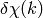
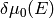

XAFS: Post-edge Background Subtraction
-
autobk(energy, mu, group=None, rbkg=1.0, ...)
Determine the post-edge background function,  , and
corresponding
, and
corresponding  .
.
| Parameters: |
- energy – 1-d array of x-ray energies, in eV
- mu – 1-d array of

- group – output group
- rbkg – distance (in
 ) for ) for  above
which the signal is ignored. Default = 1. above
which the signal is ignored. Default = 1.
- e0 – edge energy, in eV. If None, it will be determined.
- edge_step – edge step. If None, it will be determined here.
- nknots – number of knots in spline. If None, it will be determined.
- kmin – minimum
 value [0] value [0]
- kmax – maximum value [full data range].
- kweight – weight for FFT. [1]
- dk – FFT window window parameter. [0]
- win – FFT window function name. [‘hanning’]
- k_std – optional array for standard
 . .
- chi_std – optional
 array for standard . array for standard .
- nfft – array size to use for FFT [2048]
- kstep – step size to use for FFT [0.05]
- pre_edge_kws – keyword arguments to pass to pre_edge().
- nclamp – number of energy end-points for clamp [2]
- clamp_lo – weight of low-energy clamp [1]
- clamp_hi – weight of high-energy clamp [1]
- calc_uncertaintites – Flag to calculate uncertainties in and [False]
|
|---|
| Returns: | None.
If a group argument is provided, the following data is put into it:
attribute
|
meaning
|
|---|
e0
|
energy origin
|
edge_step
|
edge step
|
norm
|
normalized (array)
|
pre_edge
|
pre-edge curve array
|
post_edge
|
post-edge, normalization array
|
bkg
|
(not normalized)
|
chie
|
 values. values.
|
k
|
values, on uniform grid.
|
chi
|
values – the EXAFS.
|
delta_chi (*)
|
, uncertainty in
|
delta_bkg (*)
|
, uncertainty in
|
autobk_details
|
Group of arrays with autobk details
|
|
|---|
Here, the arrays group.k, group.chi, and group.delta_chi
will be the same length, giving and its uncertainty
from 0 to a maximum k value determined by kmax or the range of
available data. The arrays group.bkg, group.delta_bkg, and
group.chie will correspond to the input energy array.
The background subtraction method used is the AUTOBK algorithm, in
which a spline function is matched to the low-R components of the
resulting .
For reference,  is the wavenumber of
the ejected photo-electron, where
is the wavenumber of
the ejected photo-electron, where  is the absorption threshold
energy (the 0 of photo-electron energy). For in units of
is the absorption threshold
energy (the 0 of photo-electron energy). For in units of
 and
and  in units of eV,
in units of eV,  . With this conversion of energy to wavenumber,
is defined from
. With this conversion of energy to wavenumber,
is defined from
where is the post-edge background function determined
here, and  is the edge step, determined from the
pre_edge().
is the edge step, determined from the
pre_edge().